| 名作映画の英語: ベストセレクション200 | |
| 国際映画研究会 | |
| (2016) | |
はじめに
映画は言葉を学ぶ上では最良の教材です。
映画の多くはフィクションですが、キャラクター、ストーリーは映画を見ている最中は現実となり、脇役一人ひとりまでもがその瞬間は生きています。
映画は現実によく使われるフレーズや生きた英語を多数収録しており、逆に映画が出発点となって流行した現代英語さえも無数に存在します。
本書は２００以上の有名映画それぞれから複数のフレーズをセレクトして訳文を付けており、総勢数百以上ものセンテンスを一気に学ぶことが出来ます。映画はつい真似したくなるカッコいいフレーズや何度でも繰り返したくなる愛らしいフレーズが多いので何度も口にしていると自然と似たような場面でとっさに使える、しかも一度覚えると忘れにくい英語が身についているものです。
時には英検やTOEICなどの資格試験や受験勉強の箸休めにそれらからは決して学ぶことが出来ない、ジャンクフードやスナック菓子のような英語、アメリカ人がカッコイイと思う英語などを学んでみましょう。きっとあなたの世界を広げてくれるはずです。
※ ひとつだけ注意点として、こうした映画英語は原文のみを読んでもある程度は理解できる、といった基本的な英語レベルに到達してからでなければ、訳文のみを見ても文脈を推測しにくい表現も存在しますので、その点はご注意下さい。
映画 千と千尋の神隠し(Spirited Away)より
You still haven't noticed, that something precious to you has been replaced.
まだ分かりませんか？あなたにとって大切なモノがすり変わっていることに。
Once you've met someone, you never forget. It just takes a while for your memories to return.
一度会った人間は忘れやしないさ。ただ思い出すのに時間が掛かるというだけで。
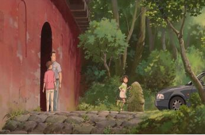
映画 ハンガー・ゲームより
We'll figure something out.
なんとかするのよ。
We might be able to figure something out.
なんとかなるさ。
映画 ワイルド・アット・ハートより
That's all in the past.
もう過ぎたことよ
On one condition.
条件がある

映画 24 -TWENTY FOUR- Season 1より
Ladies and gentlemen of the press, if you will please take your seats now.
報道関係の皆さん ご着席ください
I'll be speaking with my superiors and I'll get back to you.
上と相談してみる
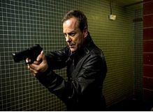
映画 理想の恋人.comより
Maybe we should try this over again.
仕切り直しましょ
Can we just skip all the small talk?
雑談は抜きにしないか？
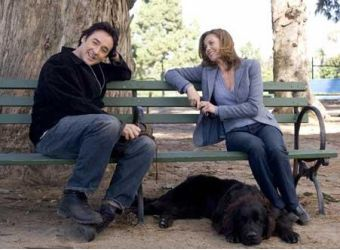
映画 ソードフィッシュより
It has a central encryption you have to crack to utilize the system.
でも暗号を解読しないと利用できないわ
Misdirection. What the eyes see and the ears hear, the mind believes.
錯覚だよ 人は目と耳の刺激にだまされやすい

映画 glee Season 1より
Can we cut the crap?
早く本題に
What are you up to, Sue?
何をたくらんでる?
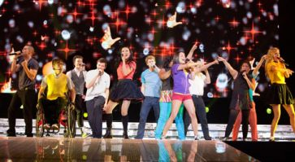
Discoveryチャンネル セックスアピールの科学 （下）より
addictive
常用癖がつきやすい
if two conditions were met.
２つの条件が合致したとき
Infidelity is not solely men's territory.
浮気は男性の専売特許ではありません
映画 インディペンデンス・デイより
President Whitmore's approval ratings have slipped below 40%.
ホイットモア大統領の支持率は 40％に下がってます
Let's pick it up, men! We're on a tight schedule!
急げ 時間がないんだぞ
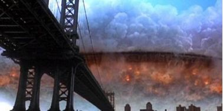
映画 ホリデイより
I'm just flipping out a little bit.
ムカついてるだけ
Well, you know you are my little survival kit.
君が頼みのツナだ
映画 紀元前1万年より
Keep this to yourself.
誰にも言うな
He will only slow us down.
足手まといだ
映画 アポロ１３より
We've got serious time pressure.
とにかく時間がない
Let's start from scratch. Clear the board.
白紙に戻して やり直しだ
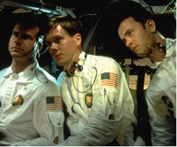
映画 スティングより
How do you want to work this? Flat rate or percentage?
定額か それとも歩合にするか？
Don't give me any of your lip, kid.
口答えは許さん
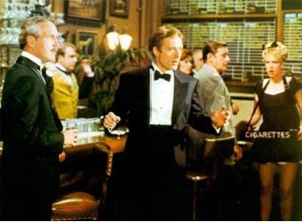
映画 ワールド・オブ・ライズより
So in as few words as possible...
簡潔に答えたまえ
You're accident prone, huh?
事故が多い体質ね
映画 薔薇の名前より
I am indeed reluctant to burden you with my dilemma...
君に面倒をかけるのは 忍びないが...
William, we place our trust in you.
ウィリアム よろしく頼むぞ
映画 グラン・トリノより
Can we just drop it?
忘れましょ
It's in mint condition, man.
まだ ピッカピカだ
Watch your language.
汚い言葉を使うな
Look, a brother to Spider is a brother to me.
スパイダーの弟分は俺たちにも弟だからな
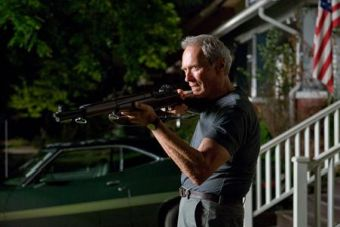
映画 FRIENDS SEASON 1 より
Won't happen again.
気をつけます
We'll be laying off people.
人員整理が必要だ
Nina Bookbinder is here to see you.
ニーナが来てます
Please have a heart.
お願いだ
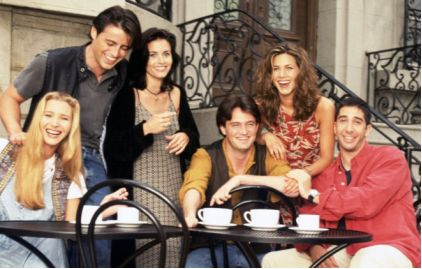
映画 ペリカン文書より
Your approval ratings will go through the roof.
支持率が上がります
Can you get a list of the major presidential campaign contributors?
大統領選の献金者リストは 手に入る？
So you're asking me to back off?
手を引けと？
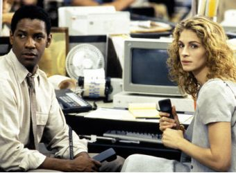
映画 ユー・ガット・メールより
I was stuck in a meeting which I couldn't get out of.
会議を―抜けられなかった
I got tongue-tied.
言葉がでなくて
Do you ever feel you've become the worst version of yourself?
最悪の自分になったことある？

映画 グーニーズより
Come on, before you catch a real cold.
カゼをひくぞ
Cut it out, Mouth.
もうよせよ
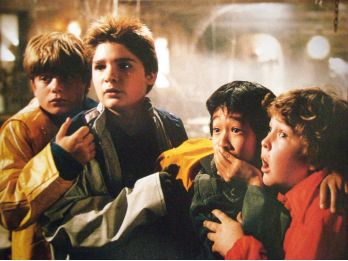
Discoveryチャンネル ネットビジネスの勝者 グーグルより
geek
(コンピュータ技術関連の)オタク
virgin web user
インターネット初心者
On August 19th 2004 Google went public, listing its shares for sale on the NASDAQ Stock Market.
2004年8月19日、グーグルはナスダックで株式を公開しました
映画 ER緊急救命室I ＜ファースト＞ より
You deserved it.
当然よ
I couldn't have done it without you, Susan.
君のおかげだ
Discoveryチャンネル ザ・人体 ～映像で見る解体新書～ 脳と記憶より
caloric intake
カロリー摂取量
painkiller
痛み止め、鎮痛剤
If the theory holds, this could slow the aging process.
この理論が正しければ、アンチエイジングも可能です
映画 ホーム・アローンより
It is a possibility that a seat will open up.
空席が出るかも
Go easy on the Pepsi.
ペプシの飲みすぎよ！
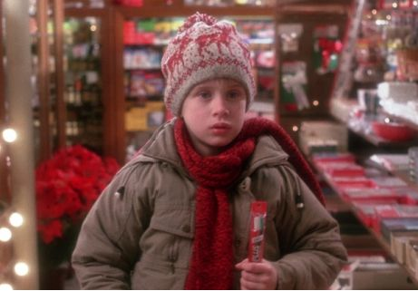
映画 デモリションマンより
Well, I'll bear it in mind.
覚えておこう
Close enough.
もうちょい
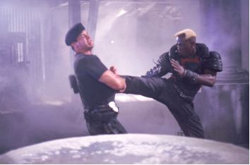
映画 プラダを着た悪魔より
Do you have some prior commitment?
先約があるの？
A million girls would kill for that job.
何百万人もが憧れる仕事だ
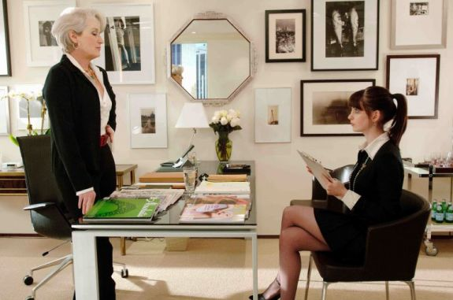
映画 デンジャラス・ビューティー ２より
Oh, good, well, that's a load off.
よかった 気が楽だわ
Excuse me, private conversation in progress.
話の途中なんだけど
映画 ディスクロージャーより
Has she any technical background?
専門知識はあるの？
The resulting delays will actually increase the costs by more than 70%.
このため最終的には 70％のコスト増となります
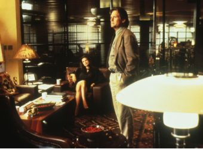
映画 ホーキング博士のよくわかる宇宙:タイム・トラベルより
You might find it a tough concept, but stay with me.
少し難しい話かもしれませんが聞いてください
I used to avoid talking about it for fear of being labeled a crank.
私も 変人と思われたくなくて、語るのを避けたものです
Let's indulge in a little science fiction for a moment.
ちょっとSFの世界をのぞいてみましょう
映画 カサブランカより
Here's looking at you, kid.
君の瞳に乾杯
I saved my first drink to have with you. Here.
一緒に飲もうと思って 待っていた
Oh, no, Emile, please. A bottle of your best champagne. And put it on my bill.
最高のシャンペンを 俺のツケで
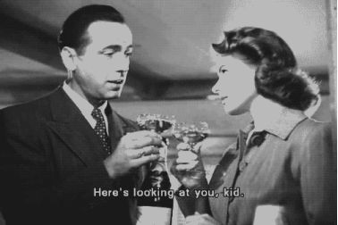
ドラマ フルハウス ファースト・シーズンより
So pick a time.
いつにする？
They're great. I'll have seconds.
最高 おかわり
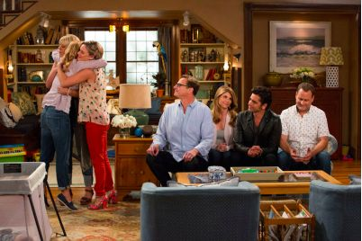
映画 マイアミ・バイスより
They are vertically integrated. They are...
奴らは縦割りの組織で...
Why is this happening to me?
何で 俺ばかり？
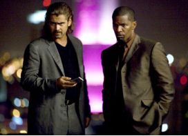
映画 glee Season 1 より
Four missed calls.
着信が４件も
Well, what kind of makeover did you have in mind?
それで どんなイメチェンを？
映画 Prison Break（プリズンブレイク） Season 1 より
So let's cut to the chase.
ズバリ聞くぜ
I'll take it from here.
あとは任せて
映画 マダガスカルより
Now, this is more like it.
こっちの方が全然いいな
Now you're talking!
そう来なきゃ

映画 シザーハンズより
Oh, I can't believe I'm talking to you in person.This is such an honor.
直接お話できて光栄ですわ
You can just go right in and make yourself right at home, OK?
遠慮なく入って くつろいで
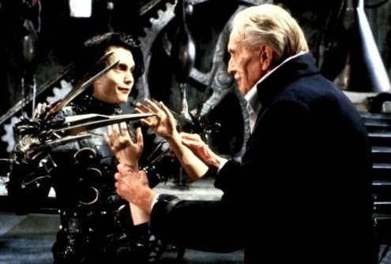
映画 デイ・アフター・トゥモローより
I jumped to conclusions.
私が早合点をしたようだ
I think I got the hang of it.
コツは のみ込めた
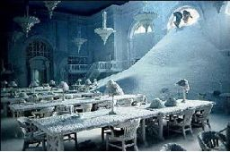
映画 モーガン・フリーマンが語る宇宙：現実とは何か？より
They take advantage of our brain's evenness to make sense of the world.
つじつまを合わせようとする脳の仕組みを利用しているのです
Nearly 80 percent of the population is affected by this bias.
80パーセント近い人がこうした偏見を持っています
I, myself, do not take sides.
私自身はどちらに転んでも構いません
映画 グッド・フェローズより
I was just stalling for time.
時間を稼ごうとした
This was really a touchy thing.
厄介な問題だった
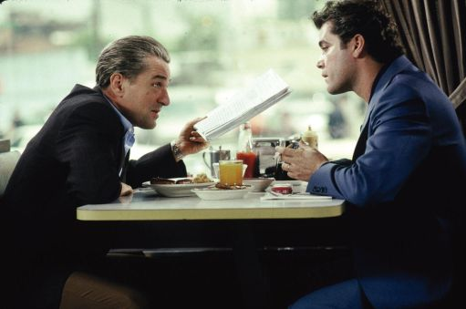
映画 太陽の帝国より
Pipe down.
騒ぐな
Their time was running out.
だが時は迫っていた
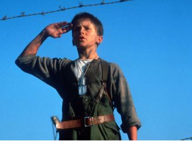
映画 ビッグより
Can you spare some change?
小銭あるだろ？
Let the new guy Xerox it.
新人にコピーさせるよ
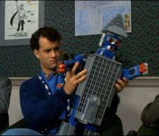
映画 FRIENDS SEASON 1 より
Everything's A-OK.
すべて順調だ
You're on.
出番よ
That's too much information!
具体的すぎる！
映画 許されざる者より
I guess they had it coming.
連中は自業自得さI figured three ways.
３等分だ
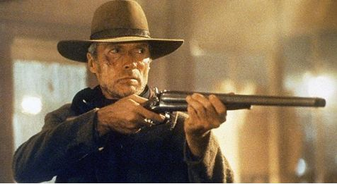
映画 ER緊急救命室I より
I'm a little under the weather.
二日酔いだ
No rest for the wicked.
貧乏暇なし
Okay, can you point to the pain?
どこが痛い？
BP: 90 over 70.
血圧90の70
映画 シティ・オブ・エンジェルより
I couldn't take my eyes off you.
君に心打たれた
Be right in.
すぐ行く
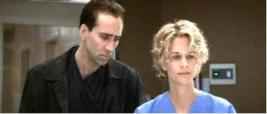
映画 ダーティハリーより
You'll go far.
出世するぜ
I give you my word of honor on it.
約束する
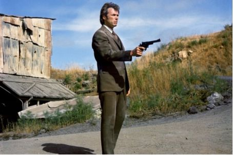
映画 スウィーニー・トッド フリート街の悪魔の理髪師より
Seems an awful waste
もったいない
Here we are, hot out of the oven.
どうぞ 焼きたてよ
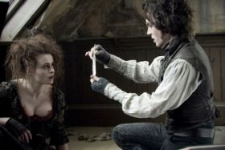
映画 スウィート･ノベンバーより
How much do you make a month?
月収は？
I don't usually map out my evenings.
夜の予定は特に立てないんだ
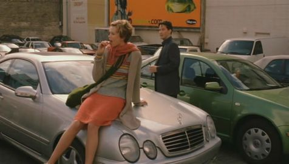
映画 glee Season 1 より
Let's bury the hatchet.
もう和解しよう
When you get things sorted out, give me a call.
落ち着いたら電話して
映画 トゥー・ウィークス・ノーティスより
We finally meet after all this time.
やっとお会いできた
Hypothetically speaking.
例えばの話よ
映画 ハリー・ポッターと死の秘宝 より
I'm afraid I must insist.
恐れながらお願いいたします
I'm a bit preoccupied at the moment.
今忙しいんだ
映画 24 -TWENTY FOUR- Season 1より
Turn right at the light.
信号を右へ
Nina will brief you when she gets back.
ニーナが後で報告する
映画 セックス・アンド・ザ・シティ・2 より
A guy just hit on me.
ナンパされた
Doesn't ring a bell.
覚えてない
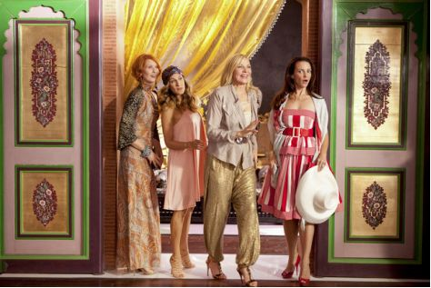
映画 風と共に去りぬより
Don't be bashful.
遠慮をせずに！
I shall value it all the more.
大切にしよう
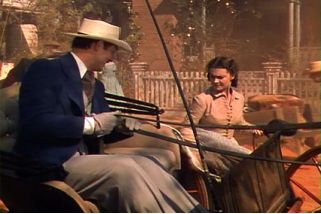
映画 かいじゅうたちのいるところより
Don't you dare say that. そんなこと言うな
Well, what am I supposed to do?
どうすればいいの？
映画 The 11th Hourより
There's always been a greed factor in human civilization.
人間文明には常に"欲"が付きまとってきた
That's what's at stake.
それが今 危ない
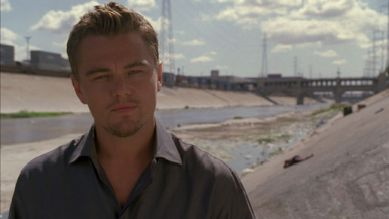
映画 そんな彼なら捨てちゃえば？より
I'm psyched you called.
電話うれしかった
I'm really sorry to bug you.
邪魔して ごめんなさい
映画 FRIENDS SEASON 1より
I loathe myself!
ああ 自己嫌悪
I'm waiting for the right moment.
タイミングを計ってる
The entire city's blacked out.
街中が真っ暗よ
I'm just stuck at the bank in an ATM vestibule.
銀行から出られないの ＡＴＭのコーナーよ
Maybe it will take my mind off it.
いい気晴らしかもね
Look, look! My first paycheck!
見て 初給料よ
You can totally, totally live on this.
生活費は十分足りるよ
I know, I know! I'm a duplex.
まるで二世帯住宅よ
映画 スペシャリストより
You are classic.
よくやった
I hardly know you.
会ったばかりよ

映画 花嫁の父より
$3.75 a head?
１人3ドル75？
Can you arrange to meet me in town on Saturday?
土曜に町で会ってくださる？
映画 FRIENDS SEASON 1 より
Well, it's somewhere in between.
2つの中間くらいかな
That was gonna be my opener.
先に言われた
This man-child has no problem with how old you are?
彼は年の差を 気にしないの？
He's our age.
同年代よ
映画 ハードウェイより
I got a knack for this.
勘がサエてきたぞ
Loosen up a little bit, okay?
素直になれよ
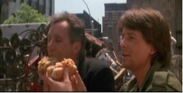
映画 ミュータント・タートルズ －TMNT－より
but that was a good try.
惜しかったね
I have my moments.
さすがだろ？
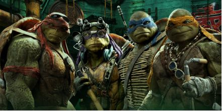
映画 シャイニングより
Why don't you mind me?
なぜ言うことを聞かないの？
Any chance of them being repaired soon?
すぐ修理できませんか？
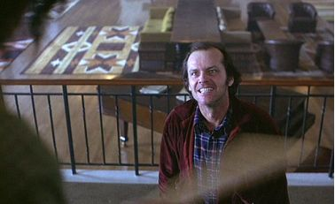
映画 コンタクトより
Drumlin pulled the plug.
ドラムリンが予算をカットした
All right, people, I want things double and triple checked here.
何重にもチェックしてくれ
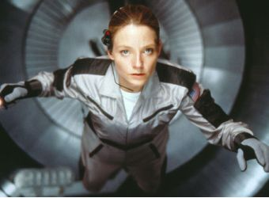
映画 ロード・オブ・ザ・リング 〜二つの塔より
He's up to something.
何か企んでる！
That doesn't make sense to me.
わしには よく分からんがな
映画 フルハウス ファースト・シーズン より
Not impressed, are you?
イマイチ？
I knew you'd say that.
そうくると思った
Here's a thought;
１つ提案がある
Suit yourself.
好きにして
Oh, brother, not again.
また始まった
There's always bumps along the way.
挫折はつきものだ
映画 ドク・ハリウッドより
Speak of the devil.
噂をすれば...
I have a stitch in my side.
わき腹が痛くなった
Discoveryチャンネル ネットビジネスの勝者 音楽ダウンロードより
democratic medium
大衆メディア
video sharing service
動画共有サービス
Everyone has something to say and suddenly anyone can be a citizen journalist.
誰にも言いたいことがあり、誰でもにわかジャーナリストになれるのです。
映画モダン・タイムスより
Hey you! Get back to work!
おいお前！仕事に戻れ！
You'll never find a rainbow if you're looking down.
下を向いていたら、虹を見つけることは出来ないよ。
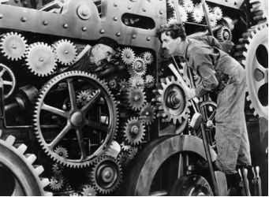
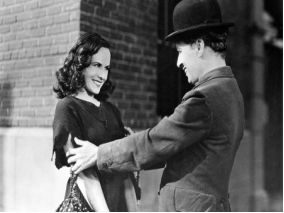
※撮影外でのチャップリンの発言
Next one!
（最高傑作は）次回作だ！
Life is a tragedy when seen in close-up, but a comedy in long-shot.
人生は、近くで見れば悲劇であるが、遠目に見れば喜劇である
映画 マトリックス レボリューションズより
When is the train due?
電車の時刻は？
Twenty-seven kilometers to go.
あと27キロです
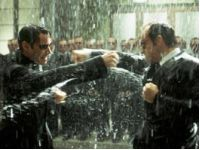
映画 マトリックスより
This can't be.
ウソだ
That's exactly my point.
問題はそこさ
We'll be back in an hour.
1時間で戻る
Time is always against us.
いつも時間との戦いだ
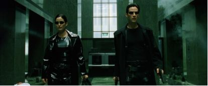
映画 ターミネーター：サラ・コナー クロニクルズ ファースト・シーズンより
Easier said than done.
言うは易しだ
I've been cooped up here for three days.
３日も缶詰めだ
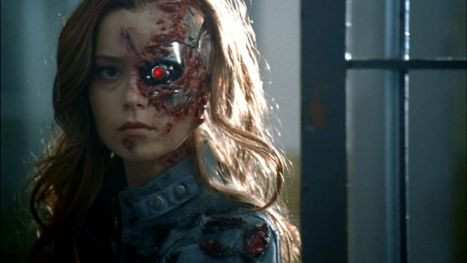
映画 ダークナイトより
Did you mean it?
本気だったか？
I've called this press conference for two reasons.
今日の記者会見の目的は２つだ
映画 シャーロック・ホームズより
I just have a small point of concern.
気になる点が
Those days are behind me.
昔の話だ
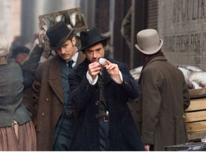
映画 アナライズ・ユーより
That's a really imaginative thought.
そりゃ名案だ
Watch him like a hawk.
目を離すんじゃないよ
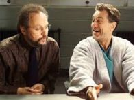
映画 エデンの東より
Yeah, I bet.
だろうな
Be a sport.
いいだろ？
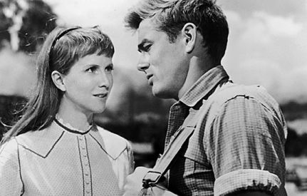
映画 Prison Break（プリズンブレイク） Season 1 より
You're making some real progress.
順調に進んでるな
Auction it off.
競りにかけるのさ
映画 Ｘ-ＭＥＮ：ファイナル ディシジョンより
I chose the lesser of two evils.
苦渋の選択だ
That's precisely why we need some of your diplomacy now.
だからこそ君が必要だ。君の"交渉力"が
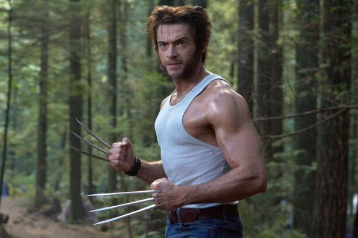
映画 ナイト･ミュージアム より
We'll walk you through your duties.引き継ぎをする
I'll gonna catch a few Z's.
おれは眠くなった
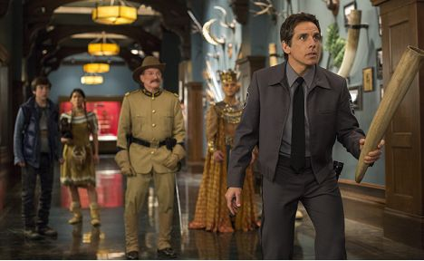
映画 デンジャラス・ビューティーより
Not really my color, is it?
趣味じゃない
Have I offended you in some way?
私が何か気に障ることした？
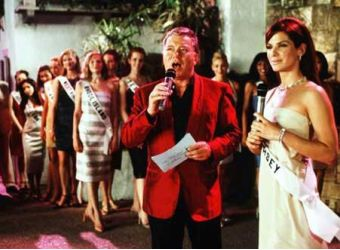
映画 燃えよドラゴン ディレクターズカットより
Shape it up!
モタモタするな
Oh, no sweat.
問題ないさ
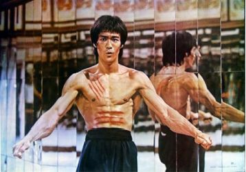
映画 マーズ・アタック！より
Let's cut a deal.
手を結ぼうぜ
You're on in five minutes.
あと5分で出番だ
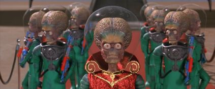
映画 最後の初恋より
I'm sorry for your loss.
お悔やみを
Well, do you have a supervisor that I could speak with, or...?
じゃ誰か上の方と代わってもらえません？
映画 ER緊急救命室I より
Run it down for me, Mark.
状況を
When's the baby's due date?
予定日はいつです？
映画 チャーリーとチョコレート工場より
Name your price.
幾らでも払う
Let's boogie.
急ごう
It's quite a likeness.
確かに、そっくりだ
映画 24 -TWENTY FOUR- Season 1 より
This is all just guesswork.
あくまでも勘よ
I appreciate the hard work and long hours you're all putting in.
長時間の勤務 ご苦労様です
映画 ブレードランナー ファイナル・カットより
Well, I'm afraid that's a little out of my jurisdiction.
それは わたしの管轄外だが
That's no way to treat a friend.
冷たいね
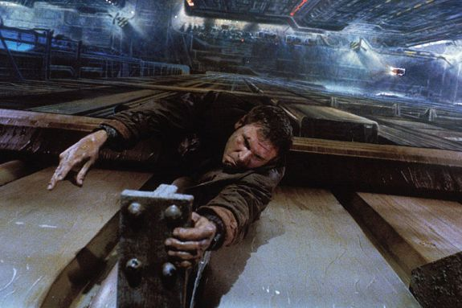
映画 アンナと王様より
It will resolve itself in time.
時が解決する問題だ
I should just... try to look at the positive side.
難しくても前向きに考えましょう
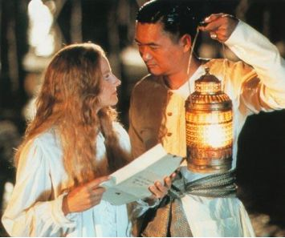
映画 俺たちに明日はないより
She's a peach.
すてきだ
I gave him a month's rent in advance.
家賃も先払いした
映画 グラディエーターより
You go too far.
バカなことを
Can I count on you when the time comes?
時が来たら君の力を借りたい
映画 母の眠りより
I'm sorry for your loss.
お悔やみを
And now for the moment we have all been waiting for.
では待ちに待った瞬間です
映画 マトリックス リローデッドより
I guess this makes us even.
これで おあいこね
It is a pickle, no doubt about it.
本当に困った問題よね
映画 ライトスタッフより
Somebody get NASA on the line.
誰かＮＡＳＡに電話しろ。
And I will back you up 100 percent.
僕が100パーセント君の後ろに付いてる
映画 FRIENDS SEASON 1 より
Well, it does not ring a bell with me.
思い出せないな
I have a jam-packed schedule.
予定が詰まってる
Hold on a second, please.
お待ちを
Will you watch my phone?
電話番を
映画 逃亡者より
We've been trading phone calls the last few days.
何度かお電話したのですが...
So I'll be back in just a second.
すぐ戻ります
If you'll excuse me, I have prior obligations to attend to.
すまんが抜けられん用があるので
Details are very sketchy.
詳細は不明ですが
映画 ウォール街より
They'll take five years to come around.／あと５年は赤字だよ
What's your marketing strategy? How will you return us to profitability?黒字にするマーケティング戦略は？
映画 バックドラフトより
Lucky guess.
まぐれさ
Don't you have any leads?
手がかりは？
Discoveryチャンネル 地球の過去と未来 グランドキャニオンより
forerunner
先駆者、前兆
gear up to
～する準備を整える
The Grand Canyon was carved out of two billion years of catastrophe.
グランドキャニオンは、20億年にわたる自然の大変動によって生まれたのです
映画 エイリアンより
I was obeying a direct order.
命令だったからさ
I want you to keep in touch at all times.
連絡を取り合って行こう
映画 迷い婚 ～すべての迷える女性たちへより
Are you getting cold feet?
心が冷めたのなら正直に
Your mother and I went gaga for him.
私も夢中でね
Discoveryチャンネル CSU：犯罪検証大学 法医学テクニックより
flashlights
懐中電灯
with the naked eye
肉眼で
In the United States, there are more than 150 violent crimes committed every hour.
アメリカでは１時間に150件以上の凶悪犯罪が起きています
映画 ER緊急救命室I より
Get you half price.
半額でいい
A small token of my gratitude.
これはお礼だ
映画 24 -TWENTY FOUR- Season 1 より
Because I'm not authorized to.
権限がないからだ
I need you to call your boss and ask him to give me clearance
上に許可をもらって
映画 ブラッド・ダイヤモンドより
let's pick up the pace.
ペースを上げよう
Off the record.
匿名で
映画 マスクより
I'm sorry, Mr. Dickey. It'll never happen again.
すみません 以後 気をつけますBut I am not responsible for the consequences.
何が起きても俺は知らないぞ
Discoveryチャンネル アメリカンチョッパー メルセデスベンツ・バイクより
high-end
高水準
shorthanded
人手不足
It's a no-brainer.
考えるまでもないよ
Discoveryチャンネル SF界の巨匠たち フィリップ・K・ディックより
Text, chat, Twitter, paper, wireless, email, video, voice. It's all surveillance data. Yet few of us seem to care that our communications can be monitored for good or ill. The problem is technology's advancing faster than the aptitude and comprehension of those that consume it on how to defend themselves while using it.
携帯メール チャット ツイッター書類 無線 電子メール 電話。全てが監視対象です。しかし監視されることを気にする人はほとんどいません。問題は技術の進歩が早すぎて自衛手段が追いつかないことです
One of his novels was being adapted into a movie, Blade Runner.
小説が"ブレードランナー"として映画化されたのです
His life was definitely cut short.
早すぎる死でした
映画 ターミネーター：サラ・コナー クロニクルズ ファースト・シーズンより
Current estimated value: 246,000.
今の相場で24万6000ドル
So this is my counter-offer.
提案がある
映画 Prison Break（プリズンブレイク） Season 1 より
It's all about timing.
タイミング次第だ
I just have a little unfinished work to take care of.
やり残した仕事がある
映画 モーガン・フリーマンが語る宇宙：自由意志より
A metaphor that helps thinking about it is the hardware, software distinction.
コンピューターのハードウェアとソフトウェアの関係にも例えられます
What if we could predict a flashpoint and take steps to stop it from happening?
火種を見つけて事前に消し止めることができるとしたらどうでしょう？
Should I take things out of the top level, or should I take things out of the bottom level?
上層部の問題なのか？ 下層部の問題なのか？
映画 トロイより
So be it.
いいだろう
We have a pact!
約束だぞ
映画 24 -TWENTY FOUR- Season 1 より
Give me the headlines.
要点を
It's probably just from all the stress, honey.
ただのストレスだと思うわ
映画 ハリー・ポッターと炎のゴブレットより
I say different!
わしは そう思わん
Even when you go wrong, it turns out right.
いつもいい方に転ぶなあ
I'd like to say a few words.
ひと言言っておこう。
I believe in a practical approach.
実践教育が一番だ
Discoveryチャンネル エコ・テクノロジー 未来の燃料より
ballgame
状況、事態
cutting edge
最先端の、最前線の
So if you would like to volunteer, give me a call and we will see what we can do.
協力したい方はぜひ ご一報ください
映画 24 -TWENTY FOUR- Season 1 より
Must be tough on you.
君も大変だな
The next six hours will be critical.
おそらく これから６時間がヤマです
映画 オーシャンズ12より
With interest. A hundred and sixty million dollars over three years.
１億6000万ドルそれに３年分の利子
Of course, we've made some state-of-the-art upgrades since then.
もちろん最高水準に改良してます
映画 glee Season 1 より
I am over the moon for you.
私もうれしいよ
Break a leg.
頑張ろう
映画 インサイド・マンより
Off the record?
オフレコで？
You got nothing to lose.
損はないだろ？
映画ターミネーター2より
Something's wrong, she's never this nice.
なんかおかしいよ。妙に優しいんだ。
Stay here, I'll be back.
ここにいろ。戻ってくる。
This is the vehicle's top speed.
これがこの車の最高速だ。
You did. Thirty-five years from now, you reprogrammed me to be your protector here, in this time.
お前が私を送り込んだのだ。今から35年後、お前はこの場所この時間にお前を守るよう私を再プログラミングしていた。
映画007 ドクター・ノオ より
James! Where have you been? I've been searching all over London for you.
ジェームズ！どこにいたんだ？ロンドン中を探したんだぞ！
That's a Smith & Wesson, and you've had your six.
スミス&ウェッソンは6発だ。
映画攻殻機動隊 (Ghost in the Shell)より
I am not AI. My codename is project two-five-zero-one. I am a living, thinking entity that was created in the sea of information.
AIではない。私のコードはプロジェクト2501。私は、情報の海で発生した生命体だ。
As a sentient lifeform, I hereby demand political asylum.
生命体として、私は政治的亡命を希望する。
There's nothing sadder than a puppet without a ghost, especially the kind with red blood running through them.
ゴーストのない人形は哀しいもんだぜ。特に赤い血の流れている奴はな。

- Thank you for reading this book to the end!
- We pray for your success and good fortune.
- Fin -